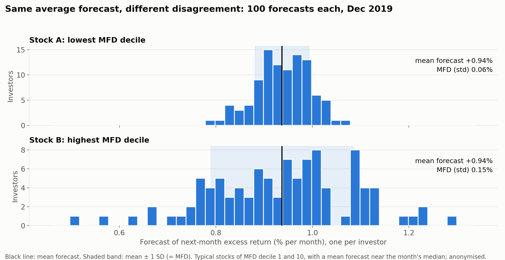
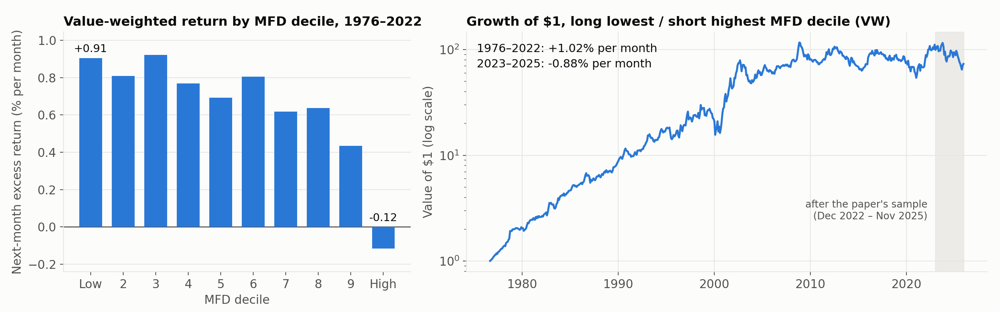
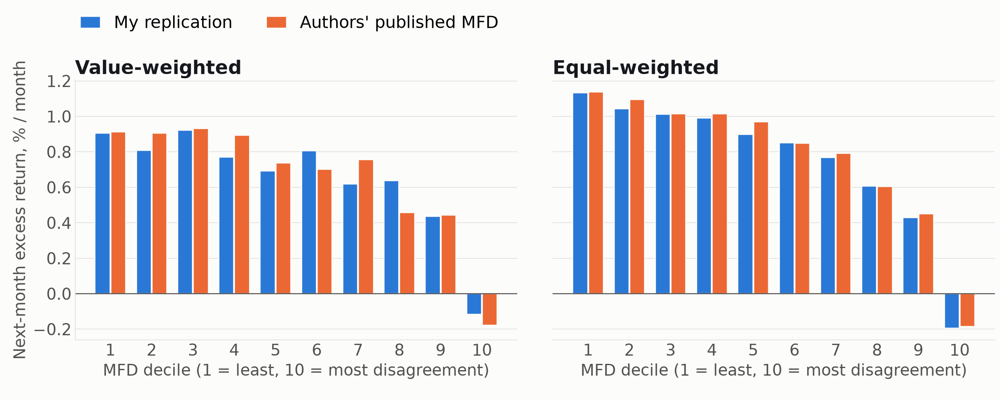
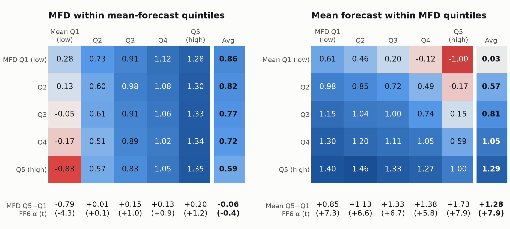
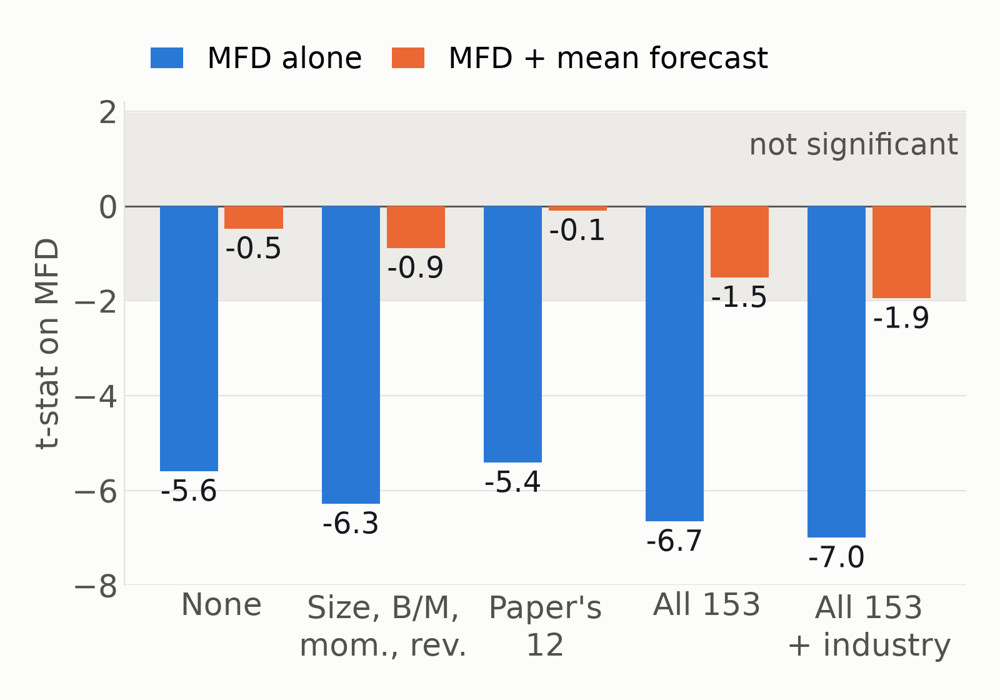
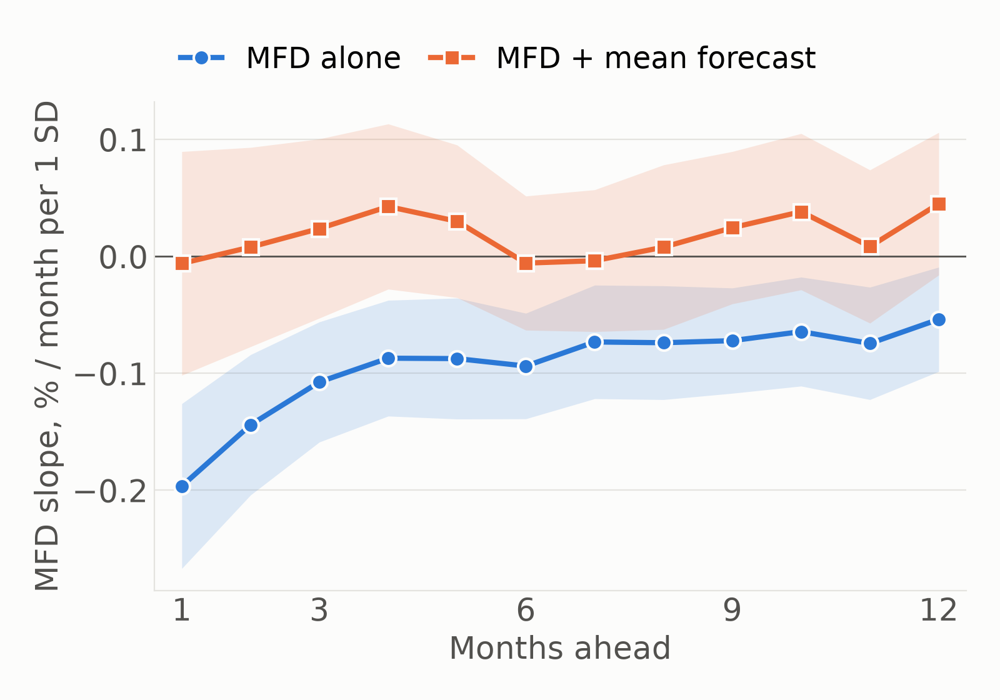
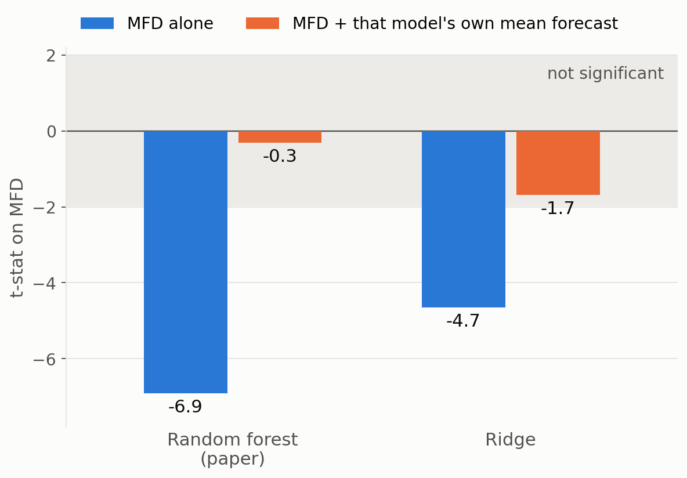
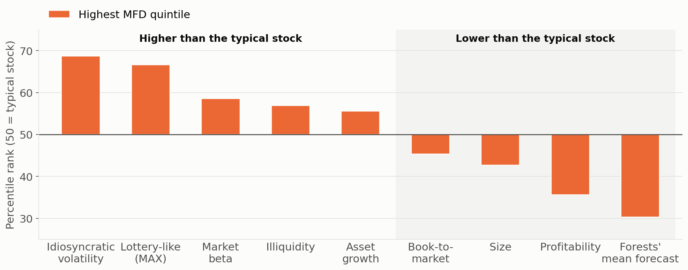
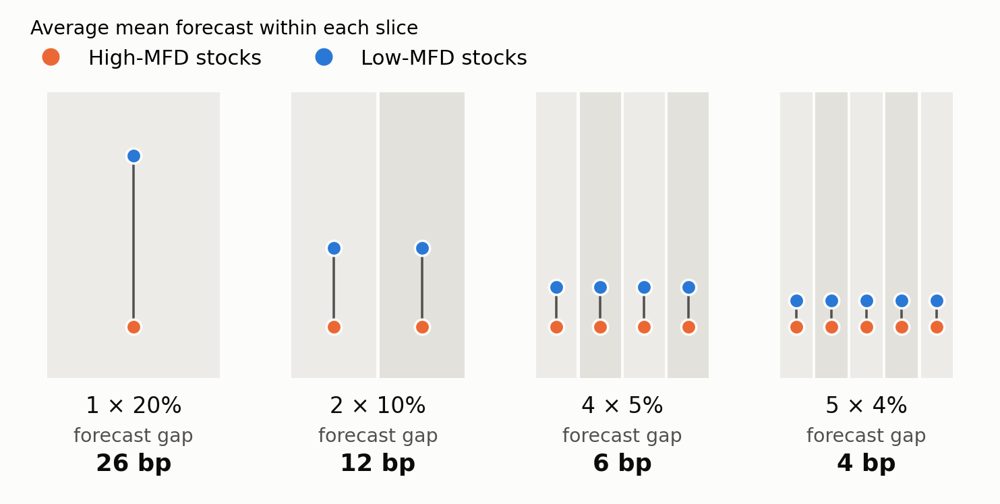
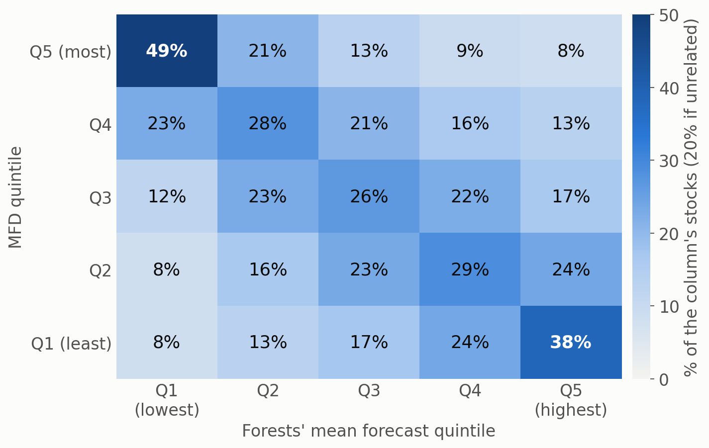

Replicating and testing Bali, Kelly, Mörke and Rahman, “Machine Forecast Disagreement” (Review of Financial Studies, forthcoming)
Jatin Lamba
Part 1 · The paper
Shorting is costly, so pessimists stay out and prices reflect the optimists.
More disagreement means more overpricing and lower future returns.
Analyst dispersion covers few stocks.
Instead, train 100 machine-learning “investors” on different information and measure how much their return forecasts disagree.
The highest-disagreement decile underperforms the lowest by 1.14% a month, value-weighted (t = 4.33), 1976–2022.
2
Part 1 · Construction
153 characteristics
Jensen-Kelly-Pedersen, ranked into [−1, 1] each month
100 “investors”
each a random forest on a random 76 of the 153 characteristics;
depth 3; 2,000 trees
100 forecasts
of next-month return, per stock, per month
Paper’s signal
MFD = their spread (SD)
Deciles: long low MFD, short high
Data · JKP (2023)
Jensen-Kelly-Pedersen stock characteristics on WRDS, built from CRSP and Compustat: 153 published return signals, monthly from 1966.
Universe
US common stocks on NYSE, AMEX and Nasdaq, price above $5, no financials or utilities: about 2,700 stocks a month.
Training
10-year rolling window, refit yearly to predict next year;
5% of features and rows per tree.
Feature gaps filled with the month’s median (13% of values).
3
Part 1 · An example

4
Part 1 · Their evidence

Stock controlS
Hold known stock predictors fixed (size, value, momentum, volatility, …) and ask whether MFD still predicts returns.
Factor models
Six-factor alpha (Fama-French 5 + momentum): −0.63% a month (t = −3.5)
Paper’s 12 controls
Fama-MacBeth slope −0.23 (t = −5.4)
Borrowing fees
Alpha: −2.30% (high fee) vs −0.07% (low fee)
5
Part 2 · The question
1 · Where I started
I rebuilt MFD and the spread is there: low-disagreement stocks beat high-disagreement stocks by about 1% a month.
2 · The natural question
The same 100 forecasts also give a mean forecast (the forests’ own expected return).
MFD is their spread, the mean is their average.
3 · First check
Across stocks, MFD and the mean forecast have a correlation of −0.49.
Stocks the forests expect to do badly get the widest disagreement.
So: how orthogonal is MFD to the mean forecast, and does it add any signal beyond it?
Surprisingly: None of the paper’s controls is the mean.
6
Part 3 · The objection
If disagreement were truly priced, it would survive that control. If MFD is a disguised low-return forecast, its slope goes to zero.
Five tests, with pass/fail criteria fixed before I ran them (A4). The paper survives if MFD keeps |t| > 2 once the mean is added.
7
Test 1 · Rebuild

Six-factor alpha, monthly time series: R₁₀ − R₁ = α + β₁·MKT + β₂·SMB + β₃·HML + β₄·RMW + β₅·CMA + β₆·MOM + ε
Value-weighted
Mine −1.02% (t −4.0) · Authors −1.09% (t −4.3)
Six-factor alpha: −0.61 vs −0.60
Equal-weighted
Mine −1.33% (t −5.4) · Authors −1.32% (t −5.7)
Six-factor alpha: −0.88 vs −0.88
Full scale: the authors’ replication code, 100 investors × 2,000 trees, rerun on JKP data from WRDS, August 1976 to November 2025 (1.7 million stock-months).
8
Test 2 · The key regression
Regression 1 · The paper’s: without the mean
Next-month stock return
=
a
+
b × MFD
−0.196
(−5.47)
+
c × Controls
+ error
Regression 2 · Mine: add the mean forecast
Next-month stock return
=
a
+
b × MFD
−0.006
(−0.13)
+
d × Mean forecast
+0.47
(9.1)
+
c × Controls
+ error
t-statistics in brackets.
Controls: the paper’s 12 controls (beta, size, value, momentum, …).
Paper reports b = −0.23 (−5.36) on the authors’ own published MFD, regression 2 gives b = −0.02 (−0.40).
9
Test 3 · Double sorts

Portfolios are equal-weighted. The exception is the lowest-mean column; Part 4 holds the mean fixed more tightly there. Value-weighted, no MFD high-minus-low alpha is significant in any mean-forecast quintile, the lowest included.
10
Test 4 · The paper’s robustness checks
t-stat on MFD, from no controls to all 153 characteristics + industry

MFD slope for returns 1 to 12 months ahead, paper’s 12 controls

11
Test 5 · A different investor model
Same 100 investors, same random 76 of 153 characteristics, but each fits a ridge regression. Each model’s MFD is tested against its own mean forecast.

Controls
The paper’s first spec, 4 controls: beta, size, book-to-market, momentum.
Reading it
Both models’ MFD looks priced on its own. Add that model’s own mean forecast and the slope goes to zero.
12
Part 4 · The economics · Which stocks forests disagree about

1 · Typical stocks → agreement
Many similar stocks to learn from, so every forest gives a similar answer.
2 · Extreme stocks → disagreement
Few similar stocks, so which features a forest sees decides its answer.
The spread is mechanical, not a difference of opinion.
MFD measures how hard a stock is to model, not how much investors disagree.
13
Part 4 · The corner that survives

The “optimists” aren’t optimistic
Miller needs optimists who bid the price above fair value. For high-MFD stocks here:
+0.07%
most bullish forests
+0.54%
typical stock
Even the most bullish forest expects less than a typical stock. No one is bidding the price up.
The 'mean' gap between high and low MFD buckets reduces if we make the mean forecast buckets tighter.
14
Verdict and next steps
Its controls omit the forests’ own mean forecast.
Add it and MFD’s t falls from −5.5 to −0.1, and Miller’s optimist test fails.
Given the mean forecast, MFD predicts nothing for 80% of stocks.
The rest is small, extreme stocks, where controls absorb it and even the “optimists” are bearish.
In hard-to-model stocks, model dispersion may partly track real disagreement.
Testing it needs an outside measure: lending fees or analyst dispersion.
15
Appendix
A1 · The data
A2 · Miller’s own prediction
A3 · Where disagreement lives
A4 · Test plan, fixed before results
16
Appendix A1 · The data
| Item | Detail |
|---|---|
| Source | Jensen, Kelly & Pedersen (2023, JF) data on WRDS, from CRSP returns and Compustat accounting |
| Coverage | US, monthly, Aug 1966 – Dec 2025; tests start Aug 1976 |
| Universe | Common stock on NYSE, AMEX, Nasdaq; price above $5; no financials (SIC 6) or utilities (SIC 49) |
| Size | 1.98M stock-months, 23,427 stocks; median 2,672 a month (range 1,634 – 4,631) |
| Gaps | 13% of values missing; median stock-month has 144 of 153; filled with the month’s median |
| Scaling | Each characteristic ranked within the month into [−1, 1] |
| Target | Next-month excess return, winsorised 1% / 99% each month |
| Group | # | Examples |
|---|---|---|
| Investment | 32 | asset growth, accruals |
| Intangibles | 30 | R&D, firm age, seasonality |
| Trading frictions | 27 | size, beta, IVOL, turnover |
| Profitability | 22 | ROE, gross profit, F-score |
| Value | 18 | book-to-market, E/P |
| New (JKP) | 15 | short momentum, MAX, quality |
| Momentum | 9 | 12-1 momentum, SUE |
17
Appendix A2 · Miller’s own prediction
If pessimists sit out because shorting is costly, prices reflect the optimists, so the optimist spread (80th percentile − median forecast) should carry the effect and the pessimist spread (median − 20th percentile) should not.
| Regression | Optimist spread | Pessimist spread | Difference |
|---|---|---|---|
| Paper’s 12 controls | −0.109 (t −4.86) | −0.077 (t −3.11) | −0.032 (t −1.07) |
| + mean forecast | −0.026 (t −0.95) | +0.003 (t 0.11) | −0.029 (t −0.92) |
Both sides matter about equally without the mean, and neither matters with it. The optimist half of Miller’s prediction fails.
The shorting-cost half is not tested: I have no borrowing-fee data. A rough proxy, short interest (2006–2025), points the wrong way for Miller (effect where shorting is easy, t −2.1; none where hard, t +0.8), but I don’t lean on it.
18
Appendix A3 · Where disagreement lives

Share of stocks in the top MFD quintile
49%
lowest-forecast quintile
8%
highest-forecast quintile
20% each if the two were unrelated.
19
Appendix A4 · Test plan, fixed before results
| Test | My objection predicts | Would rescue the paper |
|---|---|---|
| 1. Rebuild MFD at full scale | Gate: the spread reproduces | No reproduction, no claim either way |
| 2. Fama-MacBeth: MFD + mean forecast | MFD slope ≈ 0 | MFD |t| > 2 with the mean |
| 3. MFD sorts within mean quintiles | No spread on average | Spread in every quintile |
| 4. Richer controls, horizons 1–12 months | ≈ 0 everywhere | Survives systematically |
| 5. Ridge investors instead of forests | ≈ 0 against its own mean | Survives its own mean |
20